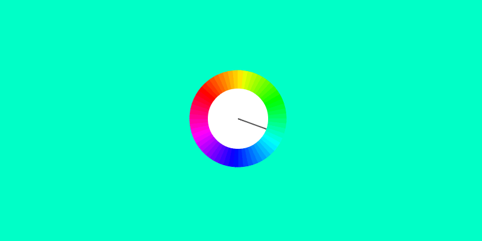

What Time Is It?
Who doesn't love a clock demo? It's timely, it's infomative, it's of-the-moment. I began this one as straight CSS but soon found that, from a performance standpoint, using canvas was much more effective. Here I'm using kinetic.js to render the clock to canvas and update the body background color every second. The color spectrum is determined using a handy little library, tinycolor.js, to output an analogous color scheme.
Then the trick is keeping the seconds hand and associated color in sync. Our old friend setInterval is notoriously bad at keeping to an accurate time interval which meant that if I left this demo running for a few minutes or hours it would get totally out of sync. In it's place I'm using Kinetic's Animation function which uses requestAnimationFrame to optimize and smooth out the animation.
And there you have it - a new color every second. If you're curious, you can find the code here.